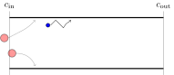

Intrusive measurements for particulate flows
| Bart Janssens | Karim Limam |
Online materials: https://github.com/barche/aerosol-measurement
Objectives
- Decide between intrusive and non-intrusive techniques
- Risks in sampling
-
Some common techniques
- Filters
- Optical Particle Counters
- Differential Mobility analyzers
- Calibration techniques
Reference material
Aerosol Measurement: Principles, Techniques, and Applications, Third Edition (Kulkarni et al.)
Aerosol measurements
Image source: AiirSource Military
What to measure
- Particle size
- Particle shape
- Mass and number concentration
- Size distributions
- Chemical and physical properties
- Flow properties
Intrusive vs non-intrusive
Intrusive vs non-intrusive
| Sampling | In-situ |
| No particle motion information | Online velocity information |
| Full size range | Lower limit on sizes |
| Full concentration range | Lower and upper limits |
| Simple deployment | Requires alignment |
| Extensive particle analysis possible | In-situ analysis only |
| Time-averaged | Instantaneous |
Intrusive vs non-intrusive
Averaged information about the particles
$↔$
Instantaneous information about particles and their motion in a flow
Steps in the measurement process
Original aerosol
Steps in the measurement process
After sampling
Steps in the measurement process
After internal losses
Steps in the measurement process
After sensor response
Steps in the measurement process
After processing
Steps in the measurement process
- Original aerosol
- After sampling
- After internal losses
- After sensor response
- After processing
Sampling
Representative sampling
Causes for loss
- Aspiration effects
- Particle deposition
- Coagulation, condensation, evaporation
- Inhomogeneities in the aerosol cloud
- Inhomogeneities in the inlet
- Clogging of the inlet
- Particle resuspension
Efficiencies
Aspiration efficiency
$η_\mathrm{asp} = \frac{c_\mathrm{in}}{c_\mathrm{aerosol}}$
Efficiencies
Transmission efficiency
$η_\mathrm{trans} ≡ \frac{c_\mathrm{out}}{c_\mathrm{in}}$
Efficiencies
Inlet efficiency
$η_\mathrm{inlet} ≡ η_\mathrm{asp} η_\mathrm{trans}$
-
Inlet efficiency depends on
- Particle size (or St)
- Flow conditions
Sampling in a flow
Isokinetic
Sampling in a flow
Super-isokinetic
Sampling in a flow
Sub-isokinetic
Isoaxial aspiration efficiency
$η_\mathrm{asp} = 1+\left(\frac{u_0}{u} - 1\right) \left(1 - \frac{1}{1+3.77 \mathrm{St}^{0.883}}\right)$
-
Maximum error 5 % if:
- $0.005 < \mathrm{St} < 10$
- $0.5 < \frac{u_0}{u} < 5$
- Note: $\mathrm{St} ≡ \frac{τu_0}{d}$
Isoaxial aspiration efficiency
$η_\mathrm{asp} = 1+\left(\color{red}{\frac{u_0}{u}} - 1\right) \left(1 - \frac{1}{1+3.77 \color{red}{\mathrm{St}}^{0.883}}\right)$
Anisoaxial sampling

Sampling in calm air
\begin{equation} η_\mathrm{asp} = \color{red}{\frac{v_{ts}}{u}} \cos{\color{red}{φ}} + \exp\left(-\frac{4\color{red}{\mathrm{St}}^{\left(1+\sqrt{\color{red}{\frac{v_{ts}}{u}}}\right)}}{1+2\color{red}{\mathrm{St}}}\right) \end{equation}
Transmission efficiency
$η_\mathrm{trans} ≡ \frac{c_\mathrm{out}}{c_\mathrm{in}}$
Transmission losses
Loss due to inertia
Transmission losses
Loss due to gravity
Transmission losses
Loss due to brownian motion
Transmission losses
Loss due to turbophoresis

Transmission losses
Loss due to thermophoresis
Transmission losses
Loss due to electrophoresis
Dilution
$DR = \frac{Q_t}{Q_s} = \frac{Q_d + Q_s}{Q_s} = \frac{Q_t}{Q_t-Q_d}$
Measure $Q_t$ and $Q_s$ ($DR = \frac{Q_t}{Q_s}$)
\begin{eqnarray} (Δ DR)^2 &=& \left(\frac{∂ DR}{∂Q_t}\right)^2 (ΔQ_t)^2 + \left(\frac{∂ DR}{∂Q_s}\right)^2 (ΔQ_s)^2\\ &=& \frac{1}{Q_s^2} (ΔQ_t)^2 + \frac{Q_t^2}{Q_s^4} (ΔQ_t)^2\\ &=& \frac{Q_t^2}{Q_s^2} \left(\frac{ΔQ_t}{Q_t}\right)^2 + \frac{Q_t^2}{Q_s^2} \left(\frac{ΔQ_s}{Q_s}\right)^2 \end{eqnarray}
$⇒ Δ_\% DR = \sqrt{\left(\Delta_\% Q_t\right)^2 + \left(\Delta_\% Q_s\right)^2}$
Measure $Q_d$ and $Q_s$ ($DR = \frac{Q_d + Q_s}{Q_s}$)
\begin{eqnarray} (Δ DR)^2 &=& \frac{1}{Q_s^2} (ΔQ_d)^2 + \frac{Q_d^2}{Q_s^4} (ΔQ_s)^2\\ &=& \frac{Q_d^2}{Q_s^2} (Δ_\%Q_d)^2 + \frac{Q_d^2}{Q_s^2} (Δ_\%Q_s)^2\\ &=& (DR-1)^2\left((Δ_\%Q_d)^2 + (Δ_\%Q_s)^2\right)\\ \end{eqnarray}
$⇒ Δ_\% DR = \left(1-\frac{1}{DR}\right)\sqrt{(\Delta_\% Q_d)^2 + (\Delta_\% Q_s)^2}$
Measure $Q_d$ and $Q_t$ ($DR = \frac{Q_t}{Q_t-Q_d}$)
\begin{eqnarray} (Δ DR)^2 &=& \frac{Q_t^2}{(Q_t - Q_d)^4} (ΔQ_d)^2 + \frac{Q_d^2}{(Q_t - Q_d)^4} (ΔQ_t)^2\\ &=& \left(\frac{Q_d}{Q_t-Q_d}DR\right)^2\left((Δ_\%Q_d)^2 + (Δ_\%Q_t)^2\right)\\ &=& ((DR-1)DR)^2\left((Δ_\%Q_d)^2 + (Δ_\%Q_t)^2\right)\\ \end{eqnarray}
$⇒ Δ_\% DR = \left(DR-1\right)\sqrt{(\Delta_\% Q_d)^2 + (\Delta_\% Q_t)^2}$
Dilution ratio error
Sampling using filters
Sampling chain
Figure: Aerosol Measurement: Principles, Techniques, and Applications, Third Edition
Filter principles
Figure: AFPRO Filters
Filter principles
Figure: AFPRO Filters
Filter principles
Figure: AFPRO Filters
Filter principles
Figure: AFPRO Filters
Filter principles
Figure: AFPRO Filters
Filter types
PTFE membrane filter
Analysis methods
- Gravimetric analysis
- Microscopy
- Chemical
- Biological
Artifacts
- Moisture
- Vapor adsorption
- Volatilization
- Particle bounce
Optical particle counters
Image: GRIMM Aerosol Technik
Image: Palas
Physical principle: light scattering
Image: Sharayanan, CC BY-SA 3.0
{kind=link}
Mie theory
Particle size influence
Single wavelength, forward scattering ($θ = 0$)
Wavelength influence
Forward scattering ($θ = 0$)
Index of refraction influence
Forward scattering ($θ = 0$)
Optical particle counter layout

Schematic: Wikipedia
{kind=link}
Response function
Graph: Heim et al.
Sources for errors
- Inlet losses
- Coincidence
- Wrong index of refraction
- Particle shape
- Recirculation
- Border zone illumination
Concentration limits
-
Upper limit
- Limited by coincidence and recovery time
- Limit sample flow rate
- Dilute inlet
-
Lower limit
- Depends on number of "noise pulses"
- Lower limit = 1 order above noise count
- Might be leaks or recirculation
Size limits
-
Lower limit
- Detector limit
- Gradual decrease in the sub-μm range
- Increase lightsource power
- Problem: Rayleigh-scattering of air (1 mm³ = 0.2 μm)
- Not always 50 % efficiency for lower limit!
-
Lower limit
- Depends on number of "noise pulses"
- Lower limit = 1 order above noise count
Differential Mobility Analyzer
Differential Mobility Analyzer
Graph: Flagan, 2008
Differential Mobility Analyzer
Image: Knutson & Whitby, 1975
DMA properties
- Can classify down to the nm range
- Quite slow to operate
- Radioactive source required for particle charging
- Detector: typically CPC
Calibration
Size calibration
Monodisperse reference
Photo: Polysciences
Size calibration
Size calibration

Size calibration
Atomization
Pitfalls
- Polydispersity
- Surfactant
- Agglomeration
- Difference in composition vs. application
- Health hazards
Particle counter example
Known polydisperse source
- DEHS oil droplet aerosol generator
- Pass through charge neutralizer
- Classify using Differential Mobility Analyzer
- Calibrate
Ref: Heim et al.
Index of refraction correction

Ref: Bundke et al.
Mass concentration correction
- Particle counter: mass based on assumed density
- Correct with known density
- Weighing of filter
- Different index of refraction ⇒ non-linear
Summary
- Intrusive vs. non-intrusive: choose wisely
- Know your sampling line
- Know your sensor limitations
- Check instrument performance with known sources